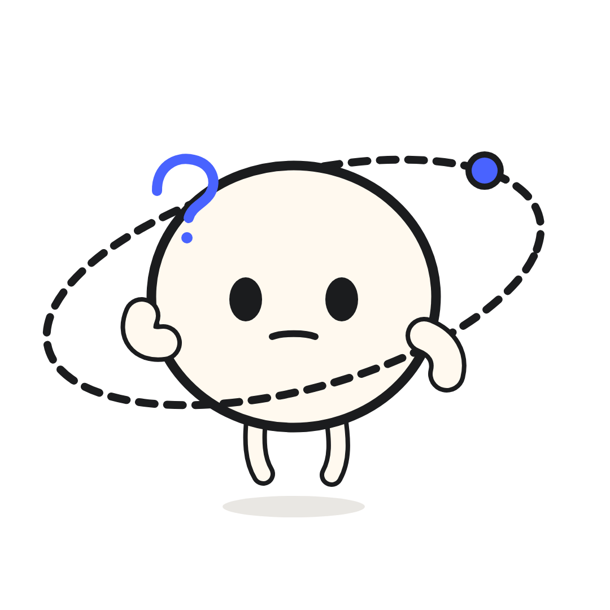
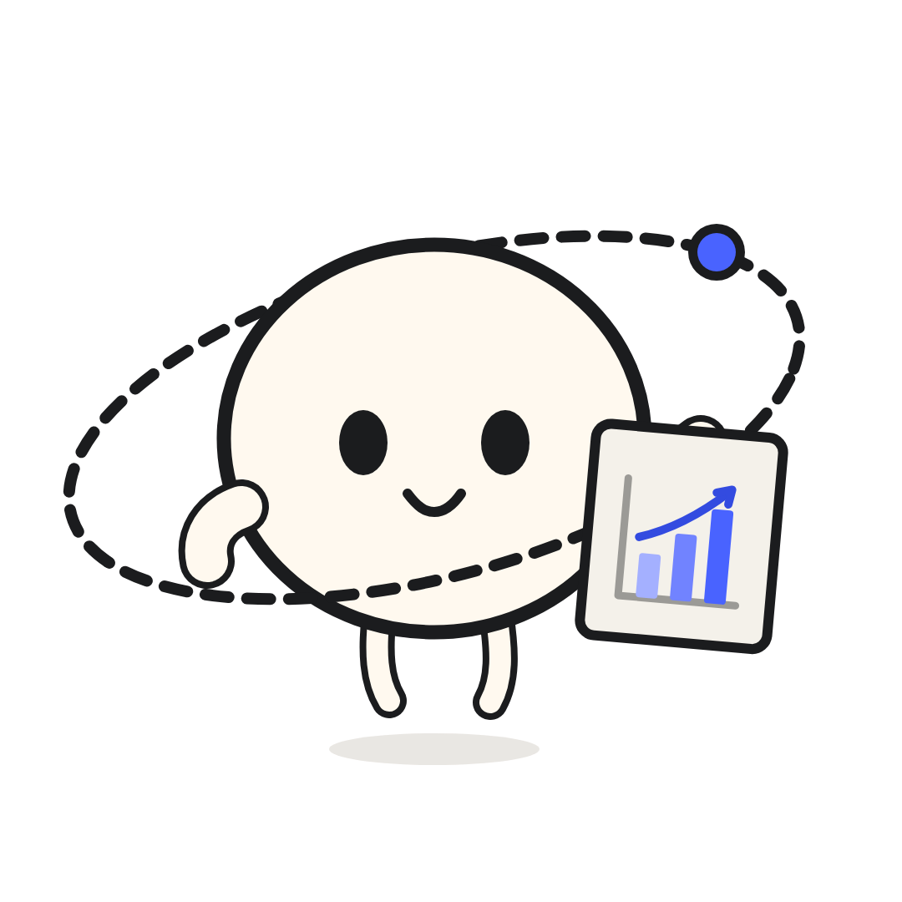
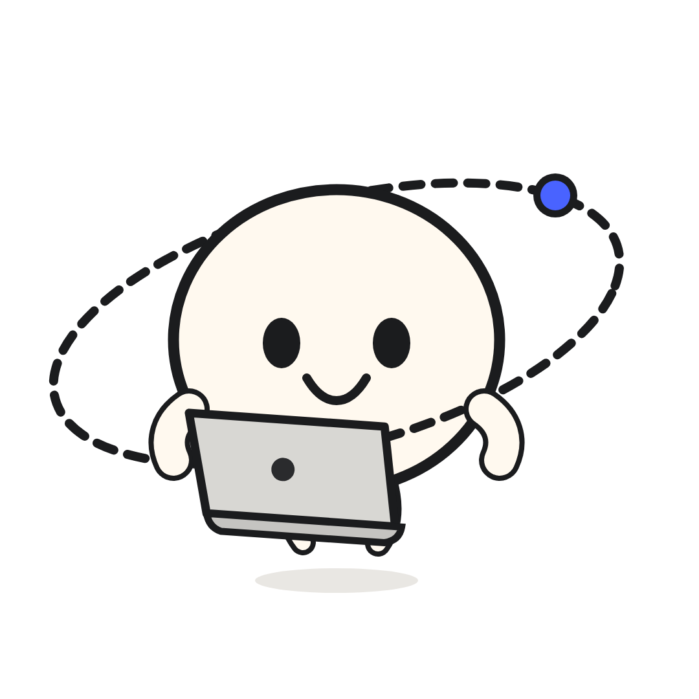

SALUD DIGITAL · INFORMACIÓN TERRITORIAL
Elegir una plaza
SERUMS no debería
depender de un Excel.
La ubicación importa. También el establecimiento, la modalidad y el contexto de cada opción.

LA FRICCIÓN ESTABA EN EL PROCESO
No faltaban
datos. Faltaba
conectarlos.
El reto era pasar de documentos y ubicaciones dispersas a información que una persona pudiera comparar.

FUENTESListas y
registrosInformación publicada en diferentes fuentes y formatos.
→
AUTOMATIZACIÓNOrdenar y
validarEstructurar, reconciliar y organizar información mediante automatización.
→
PRODUCTOExplorar y
compararMapas, filtros y opciones dentro de la aplicación.
El cambio clave: convertir información compleja en una experiencia de búsqueda y decisión.
DISPONIBLE EN COMPUTADORA Y CELULAR
LISA: las plazas
en un mapa
que puedes explorar.
Mapa, filtros, favoritos y simulación de puntaje: herramientas de apoyo para comparar alternativas.
Una plataforma que también se puede explorar desde el celular.
DOS CAPACIDADES, UNA EXPERIENCIA
Nuestro aporte:
software y
trabajo de datos.
Dentro de un equipo de médicos e ingenieros, aportamos en dos frentes complementarios.
DESARROLLO
La
aplicación
Construcción de la plataforma, sus interfaces y flujos de exploración.
DATOS Y AUTOMATIZACIÓN
Datos
ordenados
Un bot y procesos para estructurar información que demoraba demasiado organizar manualmente.

Resultado: información mejor organizada al servicio de una herramienta real.
CASO LISA / LOCALISA
No era crear
otro mapa.
Era ayudar a
comparar mejor.
Cuando producto y datos trabajan juntos, una lista difícil de explorar puede convertirse en una herramienta más clara.
Trabajo compartidoUn proyecto desarrollado con participación de médicos e ingenieros. Orbital aportó desarrollo y organización de datos.

CONOCE EL CASO Y EL PRODUCTOorbitalframeworks.qzz.io/casos/localisa/localisa.pe · Plataforma pública de LISA
LISA apoya la exploración: confirma datos y ubicaciones con las entidades competentes antes de tomar decisiones.